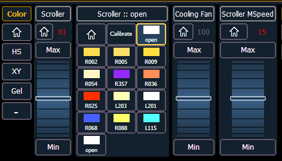

You can calibrate the center point of any frame in a scroller using the calibrate feature. This will ensure that color scroll frames will be centered over the aperture of the fixture when you advance a color scroll frame-by-frame. You can do this using the ML Controls display. See Moving Light Controls for more information.
Note: It is recommended that you calibrate your scroller frames starting with the last frame and working backward to the first frame. This will help ensure a complete and accurate calibration.
Note: Calibration may need to be performed when you initially patch a scroller and may need to be adjusted through the course of operation as spring tension changes in a color scroller.
To calibrate a scroller:
The color category will display automatically with the Hue and Saturation and scroller encoders and a frame picker open. If the scroller encoder isn't open, click the {Scroller ::} button.
